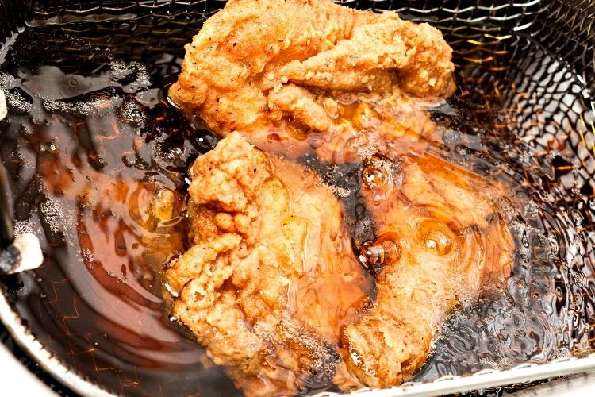

Siga com a gente para fazer o melhor parmeggiana de frango da historia bem molhadinho com o frango perfeitamente cozido sem mais nem menos slk papai toma vai toma
Ingredientes:
- 1kg de peito de frango desossado
- Temperos a gosto
- paprica defumada
- noz moscada
- sal
- pimenta do reino
- acafrao
- curcuma
- curry
- 200g de farinha de trigo
- 200g de farinha Panko
- 4 ovos
- 500ml Molho de tomate
- 4 ovos
- 200g de queijo mussarela
- 200ml de oleo vegetal
Siga a receita
- Pegue o peito de frango
- Corte em files
- tempere do seu jeito
- Em tres recipientes, coloco o ovo, a farinha de trigo e a farinha panko separadamente
- Aqueca uma frigideira com oleo
- Seque o frango com um pano limpo, passe na farinha de trigo, depois no ovo e por ultimo na farinha panko
- frite os files no oleo que voce deixou esquentando 
- deixe os files secarem antes de ir para o proximo passo
- monte os files de frango empanado em uma assadeira com molho de tomate e queijo por cima
- coloque no forno somente ate o queijo ficar dourado